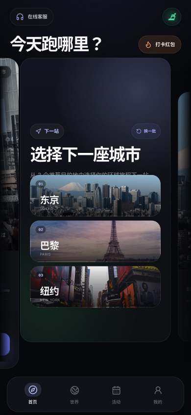

01 / REAL ROUTES
世界，是真实的。
从街道到河岸，从日常到地标。
连续的真实路线，让风景成为目的地。

A NEW REASON TO MOVE
01 / YOUR NEXT DESTINATION
循着好奇心，走进一座城。
每一条陌生的街，都可以成为出发的理由。
目的地与图片用于展示探索体验，实际开放城市及路线以 App 内为准。

03 / WHY WE MOVE
我们服务的，是想运动却难以坚持的普通人。
是向往远方，也珍惜日常的你。
木卫六希望用真实世界的吸引力，让运动本身值得期待。
因为还有一条路想走，还有一座城想去，
今天的结束，也成为下一次出发的理由。
让探索世界的好奇心，
成为持续运动的新动力。
04 / BUILT FOR EVERYDAY EXPLORERS
真实内容、App 与智能硬件，
共同组成一段可以继续的探索。
01 / REAL ROUTES
从街道到河岸，从日常到地标。
连续的真实路线，让风景成为目的地。
02 / CONNECTED EXPERIENCE
以适配的跑步机或走步机承载运动，
在 App 中选择路线、查看探索进度。
03 / YOUR JOURNEY
完成路线，收藏城市，点亮国家或地区。
让一次运动，连向下一次期待。
BEFORE YOU SET OFF
MOVEVI 木卫六是一家以全球城市跑步数据库和智能运动硬件为核心的家庭运动科技公司。我们将城市探索与居家运动连接起来，让探索世界的好奇心成为持续运动的新动力。
你可以先通过 App 了解城市与路线。实际运动需连接适配的跑步机或走步机；具体兼容型号、连接方式及可用功能，请向客服确认。设备能力与适配情况以实际交付版本为准。
木卫六围绕一段可延续的城市旅程组织体验：选择目的地、进入路线、查看探索进度、完成城市并寻找下一站。路线、运动记录与城市报告一起，帮助你知道今天走到了哪里。
你可以在 App 的城市选择页和世界页查看城市与路线。城市的开放状态、路线数量和个人解锁条件会有所不同，请以当前 App 内展示为准。官网中的城市风景不代表实时上线清单。
点击「开启探索」，通过企业微信客服了解 App 获取方式、适配设备与体验安排。也可以先打开本站提供的 App 2.0 交互原型了解产品流程；原型中的示例数据不代表真实运动记录。
THE WORLD IS WAITING
不必等到下一次假期，你的下一站就在眼前。